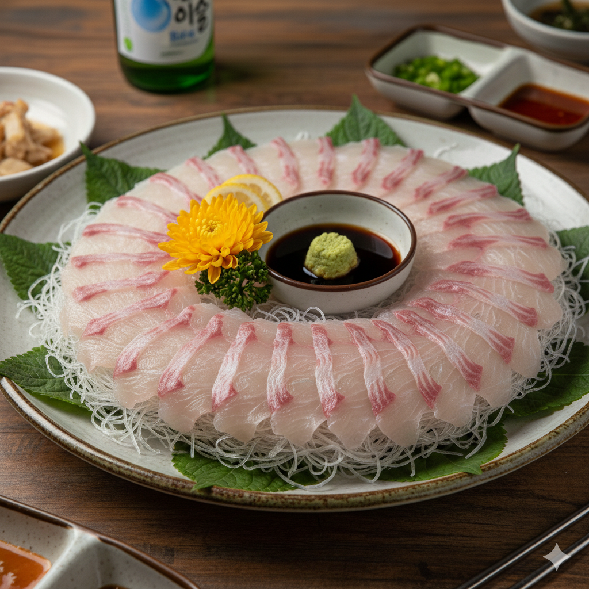
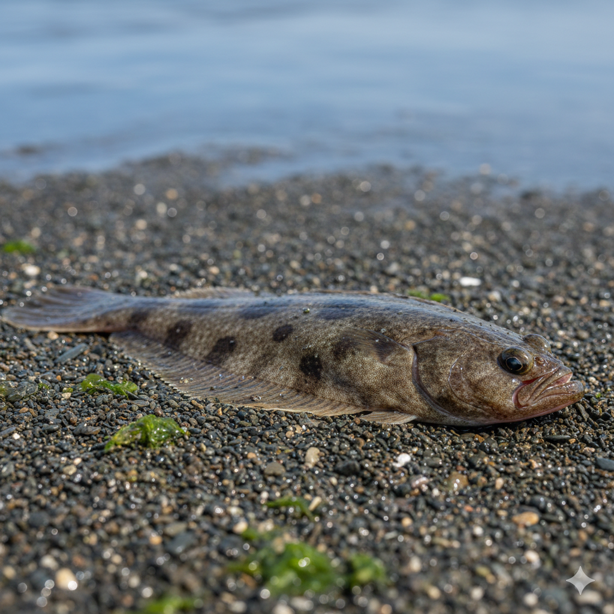
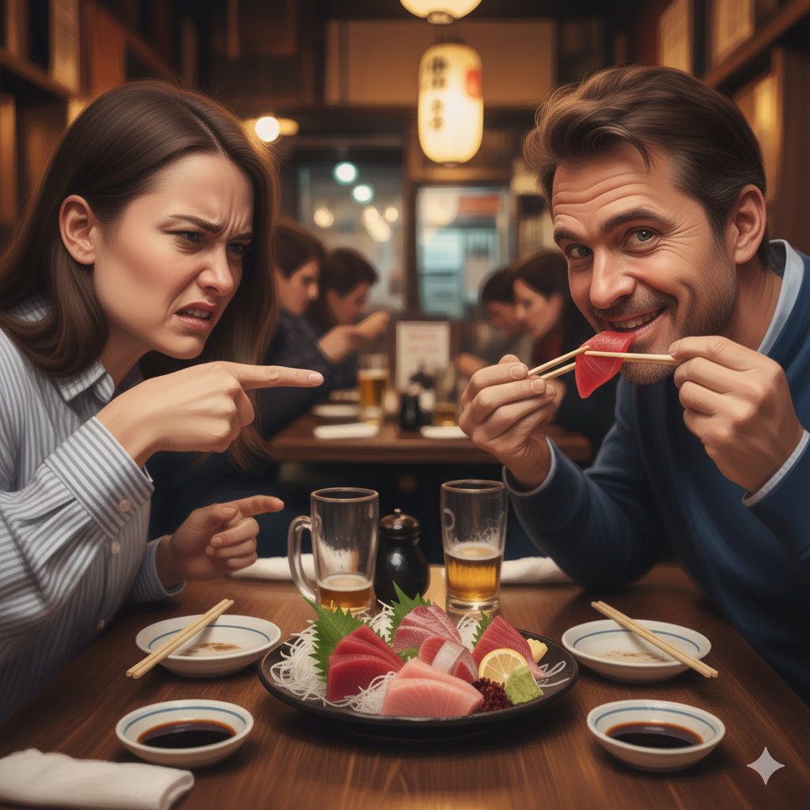

수조 속 광어의 고백... “내 살 어디 갔노? 나도 억울!!”
겨울의 제철인 광어는 억울하다며 이야기합니다. 광어는 추운 겨울을 나기 위해 몸에 기름을 잔뜩 가둡니다. 특히 우리가 사랑하는 지느러미 살 부분이 가장 두툼하고 고소해지는 시기가 바로 지금입니다. 여름 광어가 "푸석한 종잇장"이라면, 겨울 광어는 "탱글한 젤리" 같습니다. 수온이 내려가면 물고기의 근육이 수축하면서 식감이 훨씬 쫄깃해집니다. 아까 인터뷰했던 광어가 "내 살 억울하다"고 했던 것도, 사실 지금 자기 몸이 제일 맛있을 때라는 걸 알기 때문이죠. 여름철 횟집을 꺼리게 만드는 주범인 '쿠도아' 같은 기생충이나 식중독균으로부터 상대적으로 안전한 시기입니다. 안심하고 두툼하게 썰어 먹기 딱 좋죠.
[명절 단독] 가족의 분노... "회 한 접시에 민심 흉흉
동해 바다(울진)에 살았던 4명의 가족, 명절을 기념해 농수산시장에서 5만원어치 광어회를 아빠와 형이 사오자 오랜만에 날 생선으로 배을 채울 것을 기대했습니다. 허겁지겁 봉투을 뜯었으나 나온 것은 2개의 회 상자와 매운탕 거리들이 있었습니다. 회 한 젓가락을 들며 어머니 왈. "울진에서 5만원치 먹으면 옆 집 소도 배 채울 수 있을 정도"라는 아쉽다는 발언을 내뱉었다. 요즘 물가를 탓하며 가족은 매운탕을 기대헀으나 살이 없는 매운탕에 두번의 실망을 안고 변동회전투는 마무리되었다. 갓 잡은 생선에서 느껴지는 은은한 단맛과 고소함, 그리고 숙성회를 통해 극대화되는 깊은 감칠맛은 미식가들을 사로잡는 핵심 요소다. 초장이나 간장 없이도 본연의 맛을 즐기는 이들이 많다


[취존논쟁] 회, 없어서 못 먹는 '천상의 맛' vs 비린내 나는 '생살'일 뿐?
회를 즐기는 이들은 한목소리로 '신선함'과 '특유의 식감', 그리고 '감칠맛'을 예찬한다. 쫄깃하고 탱탱하며 때로는 부드럽게 녹아내리는 활어회 특유의 식감은 다른 음식에서는 찾아보기 힘든 매력이다. 살이 살아있는 듯한 '활력'은 곧 미식의 즐거움으로 이어진다.광어, 우럭, 참돔, 연어 등 어종별로 다른 맛과 향을 가지고 있어 매번 새로운 미식 경험을 선사한다. 제철에 따라 맛이 달라지는 것도 매력 포인트.
반면 회를 입에도 대지 못하는 이들은 주로 '비린내', '물컹한 식감', 그리고 '날것이라는 심리적 거부감'을 이유로 꼽는다.가장 흔한 이유 중 하나. 신선하지 않거나 특정 어종에서 느껴지는 비린내는 회를 한 번 싫어하게 되면 쉽게 극복하기 어려운 심리적 장벽으로 작용한다. 특히 후각이 예민한 사람들에게는 큰 고통이다. 일부 회는 미량의 피 비린내나 내장 맛이 느껴질 수 있는데, 이는 회 초보자나 비위가 약한 사람들에게는 큰 거부감으로 다가온다.